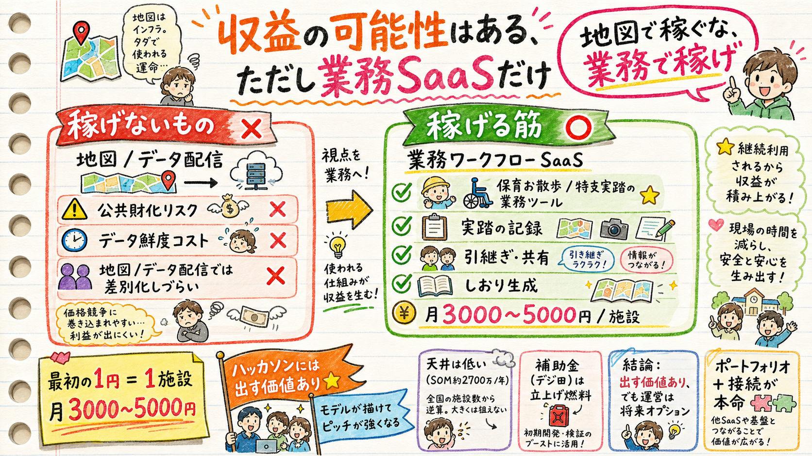

収益モデル設計とレッドチームの両方が、地図・データ配信では稼げない（公共財化＋鮮度コスト）で一致。唯一の筋は保育お散歩／特支実踏の「業務ワークフローSaaS」。この可能性を根拠に、ハッカソンには出す価値がある。

収益モデル設計 と レッドチーム、逆の立場が同じ結論に着地。
| 論点 | 結論 |
|---|---|
| 地図・データそのもの | 稼げない：元が公共オープンデータ＝「自治体が無料で」論。工事情報の鮮度維持は人的コストで売上を上回る |
| 業務ワークフロー | 唯一稼げる：実踏/お散歩の記録・共有・引継ぎ・しおり自動生成・複数職員の経路確認。地図は入口、業務が堀 |
| 実運営の主体 | 個人には重い：SLA・データ更新・自治体折衝。レッドチーム「収益追求は時間を回収できない確度75%」 |
なぜ業務なら稼げるか：実踏（下見）の公費は原則1回のみで、教員は私的時間で再訪している実在ペイン。保育・介護ICTは「初期0円・月数千円」で導入する文化が既にある（コドモン月5,500円）。教員の下見再訪1回＝半日1.5万円を防げば月額は即ペイ。
単価・回収難易度・立上げ速度で評価。
| モデル | 課金主体 | 単価感[仮説] | 評価 |
|---|---|---|---|
| A. 事業者向けSaaS月額（実踏/お散歩業務） | 施設・法人 | 月3,000〜8,000円/施設 | 本命・直販で刺せる |
| E. 補助金・受託実証 | 国・自治体 | 単発300万〜 | 立上げ燃料（デジ田交付金） |
| B. 自治体ライセンス | 市区町村 | 年30万〜150万 | 調達12〜18ヶ月 |
| C. データAPI提供 | ナビ/物流/損保 | 年100万〜 | 網羅性が育つまで不可 |
| D. B2B2C（当事者へ自治体経由） | 自治体 | Bに内包 | 予算依存で消えやすい |
規模感[仮説]：TAM 約36億/年、SAM 約5.4億/年、SOM（3年）約2,700万/年。介護ICT市場全体が約350億の中、ニッチ機能単体の上限はこのオーダー。＝“大きい事業”にはならないが“小さく回る”可能性はある。
「自治体が無料でやるべき」を食らわないために。
芯を地図に置かない：地図表示は無料化されても、園務・介護記録に統合された業務ツール（実踏記録・引継ぎ・しおり生成）は代替されない。コドモンが連絡網でなく業務基盤化で勝ったのと同じ構造。データ提供(C)を主軸にするほど公共化リスクを正面から食らう。地図で集客し、業務で課金する。
「収益の可能性があるなら出したい」への答え＝可能性はある。出し方を選ぶ。